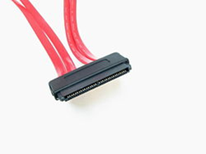

Interfaces.
Existen varias interfaces (con sus correspondientes drivers) que permiten controlar estos dispositivos, la interfaz es el sistema a través del cual se conecta físicamente el disco duro la interfaz es la encargada del transporte de los datos (señal eléctrica) entre el disco duro, existen diferentes tipos de interfaz que permiten el mayor o menor flujo de datos, que ofrecen una velocidad mayor o menor para ese flujo de datos.
Tipos de conexión de datos.
Las unidades de discos duros pueden tener distintos tipos de conexión o interfaces de datos con la placa base. Cada unidad de disco rígido puede tener una de las siguientes opciones:
- IDE
- SATA
- SCSI
- SAS
Cuando se conecta indirectamente con la placa base (por ejemplo: a través del puerto USB) se denomina disco duro portátil o externo.
IDE, ATA o PATA
La interfaz ATA (Advanced Technology Attachment) o PATA (Paralelé ATA), originalmente conocido como IDE (Integrated Device Electronics o Integrated Drive Electronics), controla los dispositivos de almacenamiento masivo de datos, como los discos duros y ATAPI (Advanced Technology Attachment Packet Interface) o unidades de discos ópticos como lectoras o grabadoras de CD o DVD.
SATA
Serial ATA o SATA utiliza un bus serie para la transmisión de datos, notablemente más rápido y eficiente que IDE. Físicamente es mucho más pequeño que los IDE, además de permitir conexión en caliente (hot plug).
Existen tres versiones:
- SATA 1. Tiene una velocidad de hasta 150 MB/s. Su frecuencia es de 1500 MHz. También son llamados SATA 1,5 Gb.
- SATA 2. Tiene una velocidad de hasta 300 MB/s. Su frecuencia es de 3000 MHz. También son llamados SATA 3 Gb.
- SATA 3. Tiene una velocidad de hasta 600 MB/s. Su frecuencia es de 6000 MHz. También son llamados SATA 6 Gb.
SCSI
Las interfaces Small Computer System Interface (SCSI) son interfaces preparadas para discos duros de gran capacidad de almacenamiento y velocidad de rotación.
Se presentan bajo tres especificaciones:
- SCSI Estándar (Standard SCSI),
- SCSI Rápido (Fast SCSI) y
- SCSI Ancho-Rápido (Fast-Wide SCSI).
Su tiempo medio de acceso puede llegar a 7 milisegundos y su velocidad de transmisión secuencial de información puede alcanzar teóricamente los 5 Mbit/s en los discos SCSI Estándares, los 10 Mbit/s en los discos SCSI Rápidos y los 20 Mbit/s en los discos SCSI Anchos-Rápidos (SCSI-2).
Un controlador SCSI puede manejar hasta 7 discos duros SCSI (o 7 periféricos SCSI) con conexión tipo margarita (daisy chain). A diferencia de los discos IDE, pueden trabajar asincrónicamente con relación al microprocesador, lo que posibilita una mayor velocidad de transferencia.
SAS
Serial Attached SCSI (SAS) es la interfaz de transferencia de datos en serie, sucesor del SCSI paralelo, aunque sigue utilizando comandos SCSI para interaccionar con los dispositivos SAS. Aumenta la velocidad y permite la conexión y desconexión en caliente. Una de las principales características es que aumenta la velocidad de transferencia al aumentar el número de dispositivos conectados, es decir, puede gestionar una tasa de transferencia constante para cada dispositivo conectado, además de terminar con la limitación de 16 dispositivos existente en SCSI, es por ello que se vaticina que la tecnología SAS irá reemplazando a su predecesora SCSI.
Además, el conector es el mismo que en la interfaz SATA y permite utilizar estos discos duros, para aplicaciones con menos necesidad de velocidad, ahorrando costes. Por lo tanto, las unidades SATA pueden ser utilizadas por controladoras SAS, pero no a la inversa, una controladora SATA no reconoce discos SAS.
La interfaz IDE que permitía conectar dos discos a un único cable de 40 pines. En paralelo se desarrolló la interfaz SCSI con un mejor rendimiento y mayores costos lo que hizo que no se popularizara en el mercado doméstico: los equipos de escritorio usaban IDE y algunos servidores podían usar SCSI.
La interfaz IDE, fue progresivamente reemplazada por SATA de igual manera la interfaz SCSI ha evolucionado a SAS.
Aunque existe una correlación entre la tecnología del dispositivo y la interfaz que proporciona la controladora establece ciertos límites, son combinables. Teóricamente, sería posible tener cualquier tipo de dispositivo con cualquier tecnología tras una controladora que proporcione cualquiera de las interfaces.
En la práctica, las limitaciones de la interfaz/controladora hacen poco adecuado tener, por ejemplo, un disco SSD con interfaz IDE: la interfaz IDE no está optimizada para aprovechar las prestaciones de un disco SSD.
Serial Attached SCSI (SAS) es una interfaz de transferencia de datos en serie, sucesor del Small Computer System Interface (SCSI) paralelo, sigue utilizando comandos SCSI para interaccionar con los dispositivos SAS. Aumenta la velocidad y permite la conexión y desconexión de forma rápida.

SCSI paralelo.
La primera versión SAS 300, que conseguía un ancho de banda de 3 Gbit/s, lo que aumentaba ligeramente la velocidad de su predecesor, el SCSI Ultra 320 MB/s (2,560 Gbit/s).
La siguiente evolución, SAS 600, consigue una velocidad de hasta 6 Gbit/s, mientras que se espera llegar a una velocidad de alrededor de 12 Gbit/s.
Una de las principales características es que aumenta la velocidad de transferencia al aumentar el número de dispositivos conectados, es decir, puede gestionar una tasa de transferencia constante para cada dispositivo conectado, además de terminar con la limitación de 16 dispositivos existente en SCSI, es por ello que se vaticina que la tecnología SAS irá reemplazando a su predecesora SCSI.
Además, el conector es mismo que se utiliza en la interfaz Serial ATA (SATA) y permite utilizar estos discos duros, para aplicaciones con menos necesidad de velocidad. Por lo tanto, los discos SATA pueden ser utilizados por controladoras SAS, pero no a la inversa, una controladora SATA no reconoce discos SAS.
Velocidad de transferencia
- SAS-1: 3 Gbit/s.
- SAS-2: 6 Gbit/s.
- SAS-3: 12 Gbit/s.
- SAS-4: 22.5 Gbit/s.